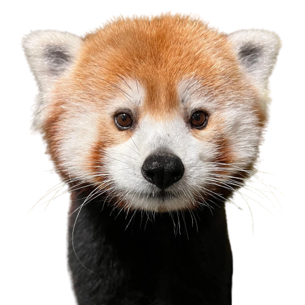

Red pandas are one of the most interesting animals on the planet! They are adorable, furry creatures that eat bamboo and remind most of a house cat. This site will cover these topics about red pandas:
Red pandas are most often found in ...
As the name suggests, red pandas eat bamboo just like their non-red counterparts. Red pandas are omnivores that also eat the things listed below:
Based on their name, most assume that red pandas are probably related to pandas. But the truth is, they are more closely related to racoons! This becomes more apparent when
Click here to learn more!